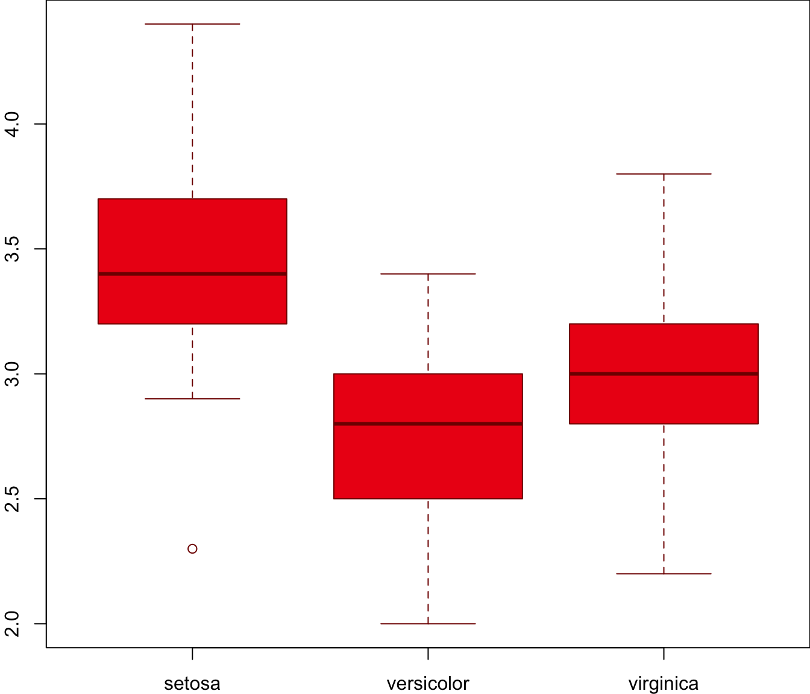

Make better posters with RMarkdown + {iheiddown}.
A Better Reproducible Poster Title
Gandalf the Grey 1, 
@IHEID
example@example.ch
Frodo Baggins 2
ag.con@iheiddown.net
Bilbo3
1 Department of International Ring Study, Central University of Middle Earth
2 Department of Dragon Studies, Northern University of Middle Earth
3 Department of Wraith-World Studies, Eastern University of Middle Earth
Introduction
This is the iheiddown_betterport template for the {iheiddown} (???) package!
Based on the great {posterdown} package, it provides the user with an IHEID
version of the template by default. The original {posterdown} template was
inspired by the twitter thread of
Mike Morrison.
Objectives
- Pick a template layout.
- Write/ create your poster content distraction free.
- Press
CTRL+Kand let{iheiddown}do its thing!
Read the guide below (mostly identical to posterdown). It will make you familiar with the ways of creating a great poster.
Methods
I will show here how to include poster elements that may be useful, such as an equation using mathjax:
\[ E = mc^2 \]
To reference a citation you can add your .bib file to the working directory
and name it in the YAML metadata or generate an automated one as done here,
then you only need to reference the label value in the .bib file. For example
this package is built on top of the wonderful {pagedown} package and I will
cite it at the end of this sentance using this in the rmd [@R-pagedown] (???).
To get a better understanding of how to include features like these please refer to the {iheiddown} wiki.
Now on to the results!
Results
Here you may have some figures to show off, bellow I have made a scatterplot
with the infamous Iris dataset and I can even reference to the figure
automatically like this, Figure \@ref(fig:irisfigure), Figure
1.
 from the legend himself, [Yihui Xie](https://twitter.com/xieyihui).](UntitledPosterBetterport_files/figure-html/irisfigure-1.png)
Figure 1: Here is a caption for the figure. This can be added by using the “fig.cap” option in the r code chunk options, see this link from the legend himself, Yihui Xie.
Maybe you want to show off some of that fancy code you spent so much time on
to make that figure, well you can do that too! Just use the echo=TRUE option
in the r code chunk options, Figure 2!
#trim whitespace
par(mar=c(2,2,0,0))
#plot boxplots
boxplot(iris$Sepal.Width~iris$Species,
col = "#ed2215",
border = "#800000",
ylab = "Sepal Width (cm)",
xlab = "Species")

Figure 2: Boxplots, so hot right now!
How about a neat table of data? See, Table 1:
|
Sepal Length |
Sepal Width |
Petal Length |
Petal Width |
Species |
|---|---|---|---|---|
| 5.1 | 3.5 | 1.4 | 0.2 | setosa |
| 4.9 | 3.0 | 1.4 | 0.2 | setosa |
| 4.7 | 3.2 | 1.3 | 0.2 | setosa |
| 4.6 | 3.1 | 1.5 | 0.2 | setosa |
| 5.0 | 3.6 | 1.4 | 0.2 | setosa |
| 5.4 | 3.9 | 1.7 | 0.4 | setosa |
| 4.6 | 3.4 | 1.4 | 0.3 | setosa |
| 5.0 | 3.4 | 1.5 | 0.2 | setosa |
| 4.4 | 2.9 | 1.4 | 0.2 | setosa |
| 4.9 | 3.1 | 1.5 | 0.1 | setosa |
| 5.4 | 3.7 | 1.5 | 0.2 | setosa |
| 4.8 | 3.4 | 1.6 | 0.2 | setosa |
| 4.8 | 3.0 | 1.4 | 0.1 | setosa |
| 4.3 | 3.0 | 1.1 | 0.1 | setosa |
| 5.8 | 4.0 | 1.2 | 0.2 | setosa |
References